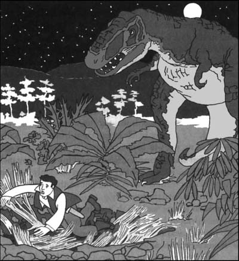

8
Listen to Part 1:

Chuyến đi kinh hoàng
Đêm đó, tôi không ngủ được. Tôi vừa giúp đỡ bạn bè mình. Giờ thì họ đã có một bản đồ về Thế giới đã mất. Họ rất hài lòng với tôi. Tôi cũng rất hài lòng với bản thân mình.
Đó là một đêm đẹp trời. Trên bầu trời có hàng trăm ngôi sao và một vầng trăng sáng. Không khí trong lành và lạnh.
Tôi nghĩ: 'Mình hiểu rồi! Mình sẽ đi dạo trong rừng. Mình sẽ đi xuống hồ. Mình sẽ khám phá thêm nhiều điều về Thế giới đã mất. Sáng mai mình sẽ trở về. Mọi người sẽ rất hài lòng với mình.'
Bạn bè tôi đang ngủ. Tôi không muốn đánh thức họ dậy. Tôi lặng lẽ bước ra khỏi trại.
Tôi lập tức thấy sợ. Cành cây rất dày. Tôi không nhìn thấy mặt trăng. Chung quanh toàn là những bóng đen lớn. Tôi nhớ lại tiếng hét khủng khiếp của con khủng long iguanodon. Nó đã chết một cách khủng khiếp. Liệu kẻ giết nó có đang săn mồi trong rừng vào lúc này không?
Tôi đi nhanh. Chẳng mấy chốc tôi đã đến một khoảng đất trống. Chúng tôi đã nhìn thấy những con khủng long iguanodon ở nơi này. Nhưng bây giờ không còn con iguanodon nào ở đây nữa. Khoảng đất trống còn nguy hiểm hơn cả trong rừng. Ánh trăng sáng trưng. Không có chỗ nào để trốn. Tôi chạy nhanh qua khoảng đất trống và đến dòng suối ở phía bên kia. Tôi biết dòng suối chảy xuống hồ. Vì vậy, tôi đi theo con suối.
Tôi đi qua nơi ở của những con khủng long bay pterodactyl. Đột nhiên, một con pterodactyl to lớn bay lên không trung. Nó bay trước mặt trăng. Nó là một hình dạng đen tối và khủng khiếp trên bầu trời. Cuối cùng, nó hạ xuống mặt đất. Nó không nhìn thấy tôi.
Tôi sẽ không bao giờ quên chuyến đi kinh hoàng đó. Nhiều lần tôi nghe thấy tiếng động của động vật trong rừng. Miệng tôi khô khốc và tim đập nhanh vì sợ hãi.
Cuối cùng tôi cũng đến hồ. Tôi nhìn vào đồng hồ. Giờ là một giờ sáng. Tôi rất khát. Tôi uống một ít nước ngọt lạnh từ hồ. Sau đó, tôi nằm lên đỉnh một tảng đá và nhìn xung quanh.
Listen to Part 2:
Từ tảng đá này, tôi có thể nhìn thấy mọi hướng. Sau đó, tôi đã rất ngạc nhiên.
Khi tôi leo lên cây vào buổi chiều, tôi đã nhìn thấy một dãy vách đá. Vách đá có những lỗ đen. Những lỗ này trông giống như hang động. Bây giờ tôi lại nhìn thấy những vách đá đó lần nữa. Chúng nằm ở phía bên kia hồ. Có những vòng tròn ánh sáng đỏ trên vách đá. Những vòng tròn ánh sáng đỏ là lửa trại. Nhưng động vật không đốt lửa trại. Chỉ có con người mới có thể tạo ra lửa. Chắc chắn có người trên cao nguyên! Họ đang sống trong hang động. Tôi nhìn chằm chằm vì ngạc nhiên.
Hồ sáng lấp lánh như thủy tinh dưới ánh trăng. Thật quá đẹp. Thỉnh thoảng tôi lại nhìn thấy đầu của một con vật lạ trong nước. Mọi thứ đều rất yên tĩnh. Tôi nhìn hồ trong một thời gian dài.
Lúc hai giờ rưỡi, tôi quyết định quay trở lại trại. Tôi bắt đầu đi bộ trở lại qua khu rừng. Thì đột nhiên, tôi nghe thấy một tiếng động phía sau mình. Đó là tiếng động của một con vật to lớn.
Tôi chạy qua một khoảng đất trống được ánh trăng chiếu sáng. Sau đó, tôi lại nghe thấy tiếng động đó. Lần này to hơn và gần hơn. Làn da tôi lạnh toát và tim đập nhanh. Có thứ gì đang đi theo tôi không?
Tôi quay lại nhìn ra phía sau. Rồi đột nhiên tôi nhìn thấy nó. Một sinh vật đen khổng lồ đang bước ra khỏi những tán cây tối tăm. Nó tiến về phía trước dưới ánh trăng.
Đó có phải là khủng long iguanodon không? Không. Nó có đầu của một con thằn lằn khổng lồ và một cơ thể to lớn. Nó có đôi tay nhỏ và nhiều răng sắc nhọn. Đó là loài khủng long ăn thịt khủng khiếp nhất trong tất cả các loài. Đó là khủng long tyrannosaurus rex. Và nó đang săn tôi.
Tôi bắt đầu chạy. Tôi chạy và chạy. Cuối cùng, tôi không thể chạy thêm được nữa. Chân tôi đau ê ẩm và tôi rất mệt.
Tôi dừng lại. Mọi thứ đều im ắng. Đột nhiên, có tiếng va chạm trong những tán cây. Con vật đã tìm thấy tôi. Tôi đã không trốn thoát!
Ánh trăng sáng chiếu vào đôi mắt to lớn và hàm răng sắc nhọn khủng khiếp của con vật. Tôi hét lên kinh hoàng và bỏ chạy. Con khủng long đuổi theo tôi sát nút. Không còn lối thoát.
Listen to Part 3:
Rồi đột nhiên có tiếng va chạm. Tôi đang rơi, rơi mãi, và mọi thứ chìm trong bóng tối.

Vài phút sau, tôi mở mắt ra. Tôi đang ở đâu đây? Tôi ngửi thấy một mùi hôi thối. Tôi đưa tay ra. Tôi cảm thấy thân hình của một con vật.
Phía trên tôi là một vòng tròn bầu trời. Mặt trăng đang sáng rực. Tôi không nhìn thấy con khủng long bạo chúa. Ánh trăng chiếu xuống tôi và tôi nhìn xung quanh. Tôi đã rơi vào một cái hố sâu. Có những xác động vật nằm trên đáy hố. Ở giữa hố là một cọc gỗ cao. Cọc này có một đầu nhọn ở đỉnh.
Bây giờ tôi đã hiểu. Tôi đã rơi vào bẫy. Một cái bẫy dành cho khủng long. Con người đã tạo ra cái bẫy này. Họ che cái bẫy bằng cành cây. Khi những con khủng long rơi vào, chúng sẽ chết trên cọc nhọn.
Không có tiếng động nào từ phía trên. Tôi trèo ra khỏi hố và nhìn xung quanh. Tôi vẫn còn sợ. Nhưng con khủng long khủng khiếp đã biến mất.
Trời bắt đầu sáng hơn. Gần đến bình minh rồi. Bạn bè tôi sẽ lo lắng cho tôi. Tôi bắt đầu đi về phía trại. Cuối cùng, tôi đã đến dòng suối. Đột nhiên, tôi nghe thấy tiếng súng. Nó phát ra từ phía trại. Tôi bắt đầu chạy.
Cuối cùng, tôi đã đến trại. Tôi gọi bạn bè mình nhưng không có tiếng trả lời. Tôi chạy vào bên trong bức tường cành cây. Dưới ánh nắng buổi sáng, tôi chứng kiến một cảnh tượng khủng khiếp.
Tất cả đồ đạc của chúng tôi nằm vỡ trên mặt đất. Bạn bè tôi đã biến mất. Thức ăn cũng biến mất nhưng những khẩu súng vẫn ở đó. Có máu trên mặt đất ở giữa trại.
Tôi chạy ra khỏi trại và gọi bạn bè mình. Nhưng không có tiếng trả lời. Tôi không biết phải làm gì. Tôi không biết phải nghĩ gì. Điều gì đã xảy ra? Bạn bè tôi đã chết? Giờ thì chỉ còn mỗi tôi ở Thế giới đã mất? Tôi cảm thấy buồn nôn vì sợ hãi.
Listen to Part 4:
Đột nhiên, tôi nghe thấy tiếng hét. Đó là người hầu của chúng tôi, Sancho. Anh ấy đang gọi tôi từ trên đỉnh tảng đá. Tôi chạy đến mép cao nguyên và nhìn sang bên kia. Tôi rất vui khi nhìn thấy Sancho. Giờ thì tôi không còn cô đơn nữa.
Tôi kể cho Sancho nghe chuyện đã xảy ra. Anh ấy trông rất lo lắng.
Anh ấy nói: 'Cậu phải rời khỏi nơi khủng khiếp này ngay lập tức.'
Tôi nói: 'Nhưng làm thế nào, Sancho? Làm sao tớ có thể xuống được?'
Sancho nói: 'Người da đỏ mà chúng ta cử đến làng da đỏ vẫn chưa trở về. Tôi sẽ cử một người khác đến làng để lấy dây thừng. Tôi sẽ ném chúng sang đó để tạo thành một cây cầu. Sau đó, cậu có thể xuống được.'
Mục lục
- Bìa
- Trang tiêu đề
- Trang bản quyền
- Mục lục
- Ghi chú về tác giả
- Ghi chú về câu chuyện
- Những người trong câu chuyện này
- 1 Gặp Giáo sư Challenger
- 2 Câu chuyện của Giáo sư
- 3 Hành trình bắt đầu
- 4 Sông Amazon
- 5 Sự việc khủng khiếp xảy ra
- 6 Sinh vật từ quá khứ
- 7 Cái chết trong đêm
- 8 Hành trình kinh hoàng
- 9 Tù nhân của người Vượn
- 10 Trận chiến
- 11 Thoát khỏi Thế giới đã mất
- 12 Trở về London
- Những điểm cần hiểu